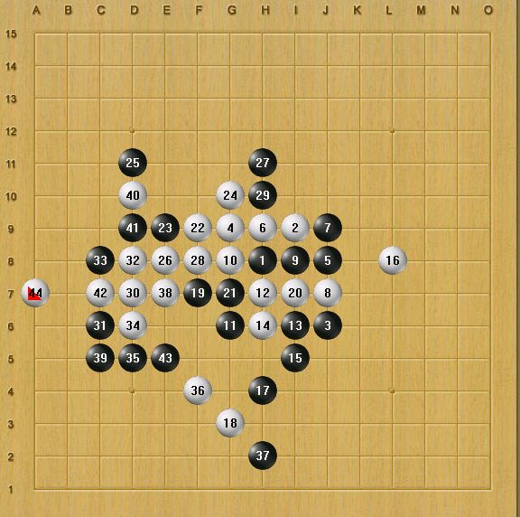

我被砍6局
#1 我被砍6局 作者：455 发表时间：2006-6-19 22:11:09
 几天前在中国游戏中心，被俺是苹果的哥哥砍了6局。希望大家不要在反这样的错
几天前在中国游戏中心，被俺是苹果的哥哥砍了6局。希望大家不要在反这样的错
这局是前几手是定实。这是第1句我黑输 ，关于他的16手是正确的。如果防7k的话。我胜 ，大家自己看看。
#2 Re:我被砍6局 作者：悟子 发表时间：2006-6-19 22:18:13
吸收教训，好好学习，天天向上。裁决殿高手如云哟！#3 Re:我被砍6局 作者：455 发表时间：2006-6-19 22:26:24
这是在书上看的
#4 Re:Re:我被砍6局 作者：455 发表时间：2006-6-19 22:31:26
引用：
原文由 455 发表于 2006-6-19 22:26:24 :这是在书上看的
#5 Re:我被砍6局 作者：龙君啸 发表时间：2006-7-6 17:47:18
流星几乎没怎么下过，记得谱1的29手好象应该在32#6 Re:我被砍6局 作者：gerbo 发表时间：2006-10-20 23:42:11
确实厉害阿#7 Re:我被砍6局 作者：catman 发表时间：2006-10-24 13:13:13
流星黑是黑难走的开局,很佩服你挑战这个变化厉害~~
我知道目前浙江教室里徐永伟校长在详细的讲解这个变化,有时间去听听会收获很多~~
#8 Re:我被砍6局 作者：catman 发表时间：2006-10-24 13:16:52
第一局里白16后白就必胜了吧~~~~
黑13不好吧应该走白22的位置吧~~